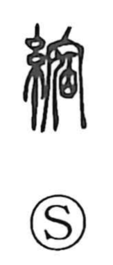

縮

Uncategorized
Kun: chijimu, chijimaru, chijimeru, chijireru, chijirasu | On: shuku
shrink ・ contract
Explanation
A phono-semantic character: the thread element signals the domain of drawing fibers tight, while 宿 functions as the phonetic, giving the on-reading shuku. It belongs to a shuku word-family that carries senses of pressing in, approaching, and drawing together—hence the core meaning ‘to shrink, to contract.’ A classical illustration appears in Mencius (Gongsun Chou I): “When I examine myself and am in the right, I will go, even against a hundred thousand,” where 縮 is used in place of 直 ‘upright, correct,’ showing an early extension of the term.